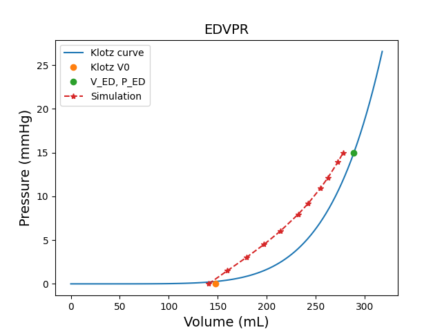
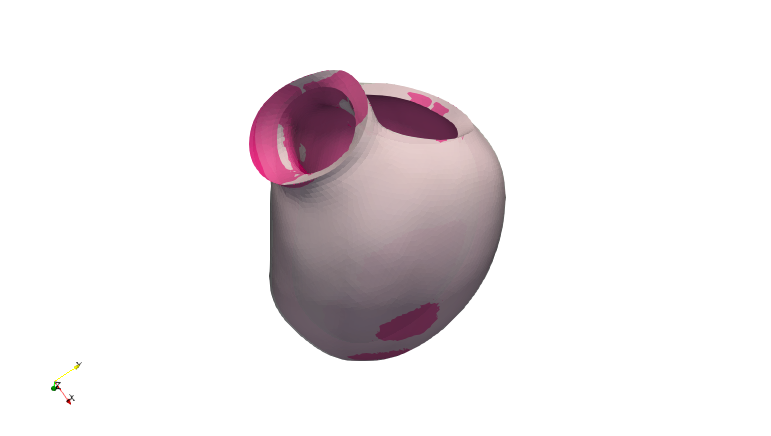

Note
Go to the end to download the full example code.
Post process Zero pressure folder#
This example shows you how to use post process script after Stress free configuration simulation, and visualize them in Paraview.
Perform the required imports#
Import the required modules
import os
import ansys.heart.core.models as models
from ansys.heart.core.post.auto_process import zerop_post
Set relevant paths#
path_to_model = r"your-model-file"
if not os.path.isfile(path_to_model):
raise FileExistsError(f"{path_to_model} not found")
# load heart model.
model: models.LeftVentricle = models.HeartModel.load_model(path_to_model)
# set zerop simulation path
zerop_folder = r"your-simulation_folder"
Run default process scripts#
a folder “post” will be created with key simulation results (json, png, vtk…)
zerop_post(zerop_folder, model)
In this folder, you will be able to find
Klotz curve#
{kind=link}
Iteration info#
{
"Simulation output time (ms)": [
0.0,
100.0,
200.3564453125,
300.8319091796875,
401.3073425292969,
531.16650390625,
610.7879028320312,
730.2200927734375,
809.8414916992188,
929.273681640625,
1000.0,
],
"Left ventricle EOD pressure (mmHg)": 15.00123151691313,
"True left ventricle volume (mm3)": 288876.80737602623,
"Simulation Left ventricle volume (mm3)": [
140581.4112845282,
159707.0733303549,
178982.14980488928,
197230.30475892712,
213741.44078356298,
232174.03531592182,
241974.46501373692,
254856.61204499874,
262439.8936858291,
272594.81508615054,
277986.88710928266,
],
"Convergence": {
"max_error (mm)": 2.806359813278375,
"mean_error (mm)": 1.1729491425680942,
"relative volume error (100%)": [-0.037697454377389125],
},
}
Visualization in Paraview#
Open Paraview and load the state file
post_zerop2.pvsm,
and specify the folder
{kind=link}
You can compare the end-of-diastolic geometry between input and after inflation
{kind=link}
You can show and export inflation animation